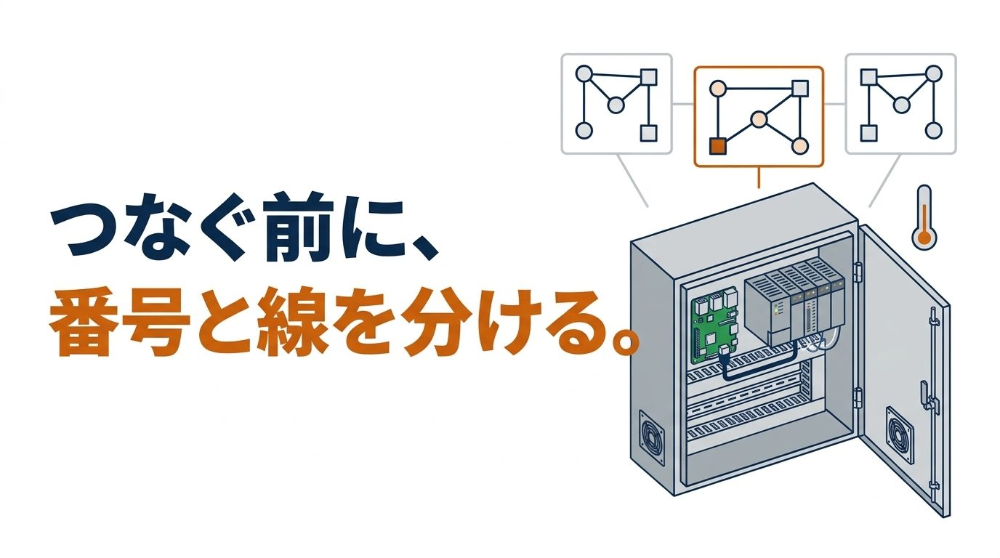

「ラズパイで設備のデータを取りたいが、PLCとどうつなげばよいのか分からない」「つないだせいで、設備が止まったらどうしよう」。PLCとラズパイの接続を調べると、通信のプログラムや回路の作り方を解説した記事が多く見つかります。一方で、工場の中で使い続けるときに起きる問題は、あまり書かれていません。
本記事では、PLCとラズパイの接続方法を、LAN・接点信号・PLC代わりの3通りに分けて、選び方と注意点を整理します。後半では、1台の装置のIPアドレスが変わっただけで、設備全体のデータの流れが止まった実例と、そこから考えたネットワークの分け方をご紹介します。IPアドレスの重なりを確かめるツールも付けました。
この記事でわかること
- PLCとラズパイの接続方法3通りと、それぞれの向き不向き
- LANでつなぐときに、PLCの担当者と決めておく5つのこと
- 24Vの接点信号をラズパイに渡すときの注意
- IPアドレスの重複で設備のデータが止まった実例と、重なりチェックのツール
- ネットワークをFA用・OA用・ラズパイ用に分ける考え方
PLCとラズパイの接続方法は3通り｜何を渡すかで決める

渡したいのは「値」か「合図」か「制御そのもの」か
PLCとラズパイの接続方法は、何を渡したいかで決まります。温度や生産数、読み取った番号のように数字や文字（値）をやり取りするなら、LANでつなぎます。「検査が終わった」「NGが出た」のようなオンとオフの合図を数本渡すだけなら、接点信号でもつなげます。そして、ほかの設備とつながっていない小さな設備なら、PLCを置かずにラズパイに制御そのものを任せる方法もあります。
3つの接続方法のメリット・デメリット比較一覧
3つの方法を、渡せるもの、よい点、気をつけたい点で並べると、次のようになります。
| 接続方法 | 渡せるもの | よい点 | 気をつけたい点 | 向いている場面 |
|---|---|---|---|---|
| LAN（通信） | 数字・文字をたくさん | 線1本で多くの値をやり取りできる | 通信の方式とIPアドレスを、設備側と合わせる必要がある | データの記録、読み取った番号の受け渡し |
| 接点信号 | オンとオフの合図を数本 | 通信の設定がいらず、仕組みが分かりやすい | 24Vと3.3Vの違いがあり、間に絶縁する部品が要る | 終わった・NGなどの合図、PLCにLANの口がないとき |
| PLC代わり | 設備の制御そのもの | PLCを買わずに、小さな設備を動かせる | 24Vへの対応と、止まったときの備えを自分で用意する | ほかとつながない、小さな単独の設備 |
迷ったら「読むだけ」から始める
どの方法でも、最初はラズパイがPLCの値を読むだけにするのが安全です。読むだけなら、ラズパイがおかしな動きをしても、設備の動きは変わりません。値を書き込んだり、合図を送ったりするのは、読むだけの仕組みがしばらく安定して動いてからにします。
この章のまとめ
- 値ならLAN、数本の合図なら接点信号、単独の小さな設備ならPLC代わり
- どの方法にも、設備側と合わせることと、止まったときの備えが要る
- 最初はPLCの値を読むだけにして、安定してから書き込みに進む
LANでPLCとラズパイを接続する方法
まずPLC側の通信の口と方式を確かめる
LANでつなぐ前に、PLCにLANの口があるかを確かめます。本体に付いている機種もあれば、通信用のユニットを足して使う機種もあります。次に、どの通信方式に対応しているかを確かめます。PLCメーカーごとの独自の方式のほか、メーカーをまたいで使える標準的な方式として、Modbus TCP や OPC UA に対応している機種もあります。ただし、使える方式は機種・通信ユニット・設定によって違い、PLCが受け答えをする側（サーバー）か、問い合わせる側（クライアント）かでも、つなぎ方が変わります。必ずPLCの仕様書で確かめます。ラズパイの側は、Pythonでこれらの方式を扱うための部品（ライブラリ）が公開されているため、方式が分かれば、AIに頼んで通信の部分を作れます。
PLCの担当者と決めておく5つのこと
LANでつなぐときは、次の5つを、PLCのプログラムを管理している担当者と決めておきます。
- IPアドレス：ラズパイに付ける番号。ほかの機器と重ならないように、台帳で空きを確かめる
- 通信の方式と番号（ポート）：PLC側が受け付ける方式と、通信の入口の番号
- 読む場所：PLCの中の、どの記憶場所（デバイスやレジスタ）を読むか
- 書く場所：書き込む場合は、ラズパイ専用に空けた場所だけにする
- 待つ時間と、切れたときの動き：返事が来ないとき何秒待つか、何回やり直すか
書き込みは、決めた場所だけにする
PLCの記憶場所には、設備の動きに使われている所がたくさんあります。番号を1つ間違えて書き込むと、設備が思わぬ動きをすることもあります。ラズパイが書き込んでよい場所は、PLCの担当者がラズパイ専用に空けた範囲だけと決め、PLC側でも、受け取った値が決めた範囲に収まっているかを確かめてから使うようにします。
実例｜QRリーダーの置き換えでは、通信に約1週間かかった
特集の記事「ラズパイでQRコードを読み取る方法」では、生産終了したQRリーダーを、ラズパイ4とUSBカメラで置き換えた実例を紹介しました。QRコードを読む部分はAIを使って2〜3日で動きましたが、PLCとの通信を確立するのに約1週間かかっています。PLC側も、ラズパイから受け取れるように通信の設定を変えました。LANでつなぐ方法は、読み取りや計測より、つなぐ所に時間がかかると考えて計画します。
この章のまとめ
- PLCのLANの口と、対応している通信方式（独自の方式・Modbus TCP・OPC UAなど）を仕様書で確かめる
- IPアドレス・方式・読む場所・書く場所・待つ時間を、PLCの担当者と決める
- 書き込みはラズパイ専用の範囲だけ。つなぐ所に時間がかかると見込む
接点信号でPLCとラズパイを接続する方法
24Vと3.3Vの違い｜そのままつなぐと壊れる
工場のPLCやセンサーのオンとオフの信号には、直流24Vが広く使われています（ただし、5Vや12Vの信号、アナログの信号もあり、同じ24VでもNPNとPNPで信号の出方が違うため、機器の仕様書で確かめます）。一方、ラズパイの入出力の端子は3.3Vで動き、5Vにも耐えられません。PLCの24Vの信号を、ラズパイの端子にそのままつなぐと、ラズパイが壊れます。逆に、ラズパイの3.3Vの出力では、PLCの24V用の入力を動かせないことがほとんどで、端子から取れる電流も小さいため、リレーなどを直接動かすこともできません。
絶縁して渡す｜フォトカプラ・リレー・入出力ユニット
そこで、間に電気的に切り離す（絶縁する）部品を入れます。光で信号を伝えるフォトカプラや、小さなリレーを使うのが一般的です。自分で回路を組むのが不安な場合は、24Vの入出力に対応した市販のインターフェースユニットを使う方法もあります。フォトカプラは速い信号にも向きますが、リレーは機械の接点なので、速さと寿命に限りがあります。どの方法でも、配線は電気の知識のある人が行い、信号の種類（NPNかPNPか）、流れる電流、速さを確かめてから選びます。
接点信号が向くのは「本数が少ない合図」
接点信号は、1本の線で1つのオンとオフしか渡せません。温度の値や読み取った番号を渡すには向かず、「検査が終わった」「異常が出た」といった合図を数本やり取りする場面に向いています。PLCにLANの口がない古い設備でも使えるのが、この方法のよい点です。
この章のまとめ
- PLCは24V、ラズパイは3.3V。そのままつなぐとラズパイが壊れる
- フォトカプラ・リレー・市販の変換ユニットで絶縁して渡す
- 本数の少ない合図に向き、LANの口がない古い設備でも使える
単独の設備なら、ラズパイをPLC代わりにする方法もある
ほかの設備とつながないなら、ネットワークの心配が減る
ここまでは、すでにあるPLCにラズパイをつなぐ話でした。一方、ほかの設備やネットワークとつながっていない小さな単独の設備（スタンドアロンの設備）なら、PLCを置かずに、ラズパイに制御を任せる方法もあります。ほかの機器とつながらないので、後半で紹介するIPアドレスの重なりやネットワークの分け方の心配は、ぐっと小さくなります。
実例｜24Vの入出力が付いた、ラズパイ互換の産業用コントローラを使った
筆者も、PLCの代わりにラズパイを使ったことがあります。ただし、ラズパイ本体だけで24Vの設備に対応させるのは手間がかかるため、24Vの入出力が付いた、ラズパイ互換の産業用コントローラを導入しました。PLCのプログラム言語の国際規格（IEC 61131-3。ラダー図・ファンクションブロック図・構造化テキストなどを定めている）に沿った開発ソフトを使えば、PLCと同じようにラダーでプログラムを書けます。保全の担当者が見慣れたラダーで書けることも、設備を直し続けるうえでは大切です。
それでも、非常停止はラズパイを通さない
ラズパイをPLC代わりにする場合でも、非常停止や安全扉のインターロックなど、安全に関わる働きはラズパイに任せません。機械の危険を見積もったうえで、安全のための回路や機器（安全リレーなど）を別に用意し、ラズパイが止まっても、設備が安全な側に止まるようにします。また、ラズパイ4（Model B）の公式の仕様では、使える周りの温度は0〜50℃です（機種によって違います）。制御盤の中は温度が上がりやすく、ほこりや油、電気のノイズの多い場所では、産業用に作られた機器を選ぶほうが安心です。
この章のまとめ
- 単独の小さな設備なら、ラズパイにPLCの代わりをさせる方法もある
- 24Vの入出力付きの産業用コントローラなら、ラダーで書けて配線の手間も減る
- 安全の働きは、ラズパイと別の安全のための回路に任せる
PLCとラズパイの接続で設備が止まる原因｜IPアドレスの重複

実例｜1台のIPアドレスが変わり、データの流れが全部止まった
ここからは、筆者が保全の現場で経験したことです。トレーサビリティの記録を受け持つ装置のIPアドレスが、あるとき変わってしまいました。作業者が、それが問題になるとは知らずに、IPアドレスを変更してしまったのが原因です。その結果、その装置を通っていた設備全体のデータの流れが止まりました。
原因と場所を探すのに、いちばん時間がかかった
困ったのは、止まった理由がすぐには分からなかったことです。通信を調べてIPアドレスが原因だと分かってからも、どの設備の番号が変わったのかを、現場で探すのに時間がかかりました。どの機器にどの番号を付けたかの一覧と、機器を見ればすぐ番号が分かる目印があれば、探す時間は大きく減らせます。
IPアドレスが重なると、何が起きるか
同じネットワーク（同じグループ）の中で、2台の機器に同じIPアドレスが付くと、送ったデータがどちらに届くか定まらなくなり、どちらか、または両方の通信が不安定になったり、止まったりします。ラズパイを足すときに、すでに使われている番号を知らずに付けてしまうと、ラズパイではなく、もとからある設備の通信が止まることもあります。ラズパイを1台足すだけでも、つなぐ前に番号の一覧を確かめるのはそのためです。
IPアドレスの重なりを確かめるツール
機器の名前とIPアドレスの一覧を入れると、重複、グループ違い、使えない番号を見つけます。ラズパイを足す前に、設備の台帳を貼り付けて確かめてみてください。
IPアドレスの重なりチェック｜重複・グループ違い・使えない番号を見つける
機器の名前とIPアドレスを、1行に1台ずつ入れてください（名前とIPアドレスの間は、空白かタブ。表計算ソフトの2列をそのまま貼り付けても読めます）。同じ番号の重複、ネットワークのグループ違い、機器に付けられないネットワークアドレス・ブロードキャストアドレス（255.255.255.0なら末尾0と255）を見つけます。入れた内容は、このページの中だけで計算し、どこにも送りません。はじめは、トレーサビリティ装置とラズパイが同じ番号になっている例です。
サブネットマスク（グループの大きさ。工場では255.255.255.0が多い）
機器の一覧（名前 IPアドレス）
結果
| 同じ番号の重複 | 台 |
|---|---|
| グループ違い | 台 |
| 使えない番号・書き方の誤り | 台 |
| 空いている番号の例 |
この章のまとめ
- 1台の装置のIPアドレスが変わっただけで、設備全体のデータの流れが止まった
- 時間がかかったのは、原因がIPアドレスと分かるまでと、変わった機器を探すこと
- 番号が重なると、もとからある設備の通信が止まることもある
PLCとラズパイの接続はネットワークを分けてから｜FA用・OA用・ラズパイ用

3つに分ける考え方
この経験から、筆者は、工場のネットワークは役割ごとに分けておく必要があると考えるようになりました。設備どうしがつながるFA用、事務所のパソコンがつながるOA用、そして試作や計測に使うラズパイ用の3つです。分けておけば、ラズパイ用のネットワークで番号を間違えても、設備の通信には影響しません。事務所のパソコンの設定変更やウイルスの影響が、設備に及びにくくなるという利点もあります。
分け方の例｜線を分ける・PLCに通信ユニットを足す
いちばん分かりやすいのは、線（つなぐ機器）そのものを分ける方法です。特集のQRリーダーの実例では、もともと設備のネットワークとは分かれた線を使いました。ほかに、PLCに通信用のユニットを足して、ラズパイ専用の口を作る方法や、VLANに対応した管理機能のあるスイッチで、つなぐ口（ポート）ごとにグループを分け、1台のスイッチの中に別々のネットワークを作る方法（VLAN）もあります。グループが違う機器どうしは、そのままでは通信できず、やり取りさせるにはルーターなどの設定が要ります。分けたネットワークの間でデータをやり取りする場合は、決めた機器と通り道だけを通すようにします。
IPアドレスの台帳と、機器に貼るラベル
ネットワークを分けても、番号の管理がなければ同じことが起きます。どの機器に、どの番号を、いつ、誰が付けたかを、IPアドレスの台帳にまとめます。あわせて、機器の本体にも番号を書いたラベルを貼っておくと、実例のように探す時間がかかることを防げます。上のツールに台帳を貼り付ければ、重なりも確かめられます。
変更のルール｜知らずに変えられないようにする
実例の原因は、作業者が影響を知らずに番号を変えたことでした。IPアドレスを変えるときは、設備の管理者に相談し、台帳を直してから変える、というルールを決めて、現場に伝えます。設定画面に入れる人を決めておく、変えたら記録を残す、といった決めごとも効果があります。
この章のまとめ
- ネットワークは、FA用・OA用・ラズパイ用に分けておく
- 線を分ける、PLCに通信ユニットを足す、VLAN対応のスイッチで分ける、などの方法がある
- IPアドレスの台帳とラベル、変更のルールで、知らずに変えられるのを防ぐ
AIでPLCとラズパイの接続の仕組みを作るときの頼み方
筆者は、プログラムを書いたことがありません。PLCとの通信の部分も、AIに頼んで作りました。頼み方の型は、特集の記事「製造業の生成AI活用事例とプロンプト例」と同じで、何をしたいか・どうしたいか・何がいるかを分けて伝えます。
まずは、PLCの値を読むだけ
プロンプト例1｜PLCの値を読むだけ
あなたは、ラズパイとPythonで製造現場の小さな仕組みを作るのを手伝うエンジニアです。 【何をしたいか】PLCの中の生産数の値を、ラズパイで1分ごとに読み取って記録したい。 【どうしたいか】PLCへの書き込みはしない。読むだけにしたい。 【何がいるか】ラズパイ4。PLCとはLANでつなぐ（設備のネットワークとは分けた線）。PLCは Modbus TCP に対応。PLCのIPアドレスと読む場所は、担当者から聞いた値を入れる。 私はプログラムを書いたことがありません。準備から1つずつ、手順を教えてください。
次に、通信が切れたときの動きを足す
プロンプト例2｜通信が切れたときの動きを足す
PLCの値を読む仕組みに、次の働きを足してください。 ・返事が3秒来なければ、読めなかったと記録に残す。前の値を使い回さない ・読めないことが5回続いたら、画面に知らせを出す ・PLCの電源が戻ったら、自動で読み直しを始める ・読んだ値が決めた範囲（0〜9999）に入っているかを確かめてから記録する ・読めた時刻、読めなかった時刻と理由を、あとで表計算ソフトで開ける形で残す
AIの答えを、そのまま設備で試さない
AIが作ったプログラムは、まず設備から外したPLCや、止めてもよい時間に試します。特に、書き込む働きを足すときは、どの場所に何を書くかを、PLCの担当者と一緒に1つずつ確かめます。AIは、こちらの設備の配線やPLCのプログラムを知りません。設備の事情は人が確かめ、AIには作る手間を任せる、という分担が安全です。
この章のまとめ
- 何をしたいか・どうしたいか・何がいるかを分けて伝える
- 最初は読むだけ。次に、通信が切れたときの動きを足す
- AIの答えは、設備から外した所で試し、書き込みは担当者と確かめる
アイツインの仕組みづくりの支援
アイツインは、保全の現場での経験をもとに、製造現場の困りごとを、ラズパイとAIで安く解決するお手伝いをしています。
つなぐ方法の選び方と、ネットワークの確かめから
何を渡したいか、PLCに何が付いているか、ほかの設備とどうつながっているかをうかがい、LAN・接点信号・PLC代わりのどれが向くかを一緒に判断します。IPアドレスの台帳づくりや、ネットワークの分け方の整理からでもお手伝いします。
試作から、PLCとの通信、使い始めの確かめまで
読むだけの仕組みの試作から、PLCの担当の方との通信の確かめ、通信が切れたときの手順書づくりまでを支援します。社内の方がAIを使って直せるようになるための研修もご相談いただけます。
まずはお気軽にご相談ください｜何を渡したいかの整理から
「PLCの値をラズパイで記録したい」「ネットワークの番号の管理が心配」「小さな設備をPLCなしで動かしたい」という段階からご相談いただけます。ご相談とお見積もりは無料です。
まとめ
PLCとラズパイの接続方法は、値を渡すならLAN、数本の合図なら接点信号、ほかとつながない単独の設備ならPLC代わり、の3通りです。どの方法でも、最初はPLCの値を読むだけにして、安定してから書き込みに進みます。
そして、工場の中でつなぐときにいちばん気をつけたいのが、IPアドレスです。1台の番号が変わるだけで、設備全体のデータが止まることがあります。ネットワークをFA用・OA用・ラズパイ用に分け、IPアドレスの台帳とラベル、変更のルールを用意してから、ラズパイをつなぎましょう。まずは上のツールに、今の設備の番号の一覧を入れてみるところから始めてみてください。
参考
・本記事の実例は、筆者の現場での経験です。設備の構成やPLCの機種によって、つなぎ方と必要な設定は変わります。
・通信方式・入出力の仕様は、お使いのPLCとラズパイの資料で確かめてください。配線は電気の知識のある人が行ってください。
・重なりチェックのツールは、入れた一覧だけをもとにした目安です。
・参考にした資料：ラズパイの公式ドキュメント（GPIOの電圧）と、ラズパイ4 Model B の公式の仕様（周りの温度）／IEC 61131-3:2025（PLCのプログラム言語）／Modbus Organization の仕様書（Modbus TCP）／OPC Foundation の仕様書（OPC UA、IEC 62541）／RFC 5227（IPアドレスの重複の検出）
PLCとつなぐ仕組みの試作をご依頼いただけます。仕組みづくり・AIの料金を見る ›